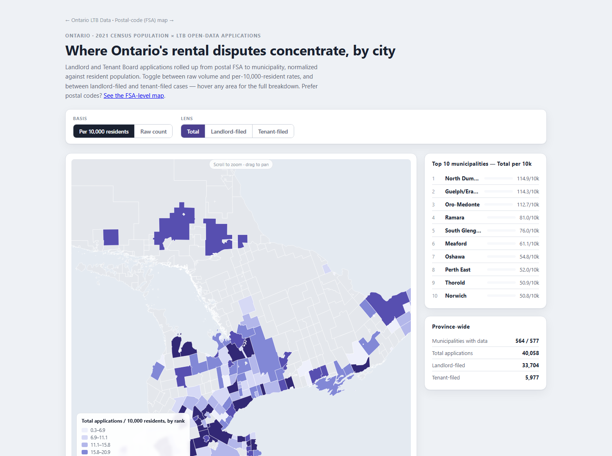
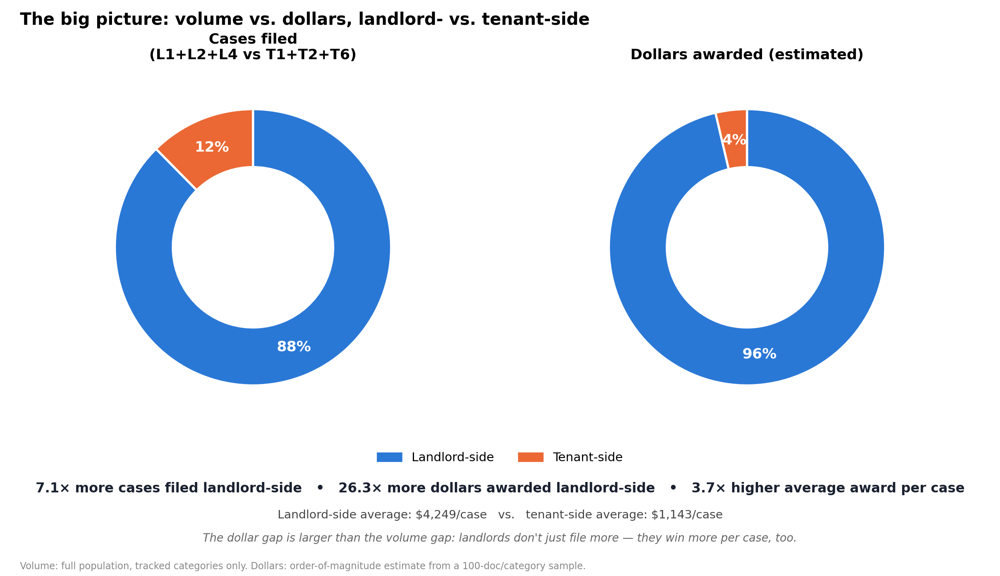

Open data · Ontario
Who wins at Ontario's Landlord and Tenant Board?
What the LTB's own public records show — built entirely from two open sources: the Board's order-data export and Statistics Canada's census. No private or scraped data.
5.7×
more applications filed by landlords than by tenants — 34,422 vs. 6,043, an exact count of the full dataset
26–74×
more money awarded to landlords than to tenants — and even per case filed, landlords average 3.7× more
~7×
the provincial median rate of LTB activity in the highest per-capita areas, once normalized by population

All 520 FSAs, by postal code
Open map →

Same data, by recognizable city name
Open map →

The dollar gap (26×) is larger than the case-volume gap (7.1×) — landlords don't just file more, they
win more per case too. Full breakdown →